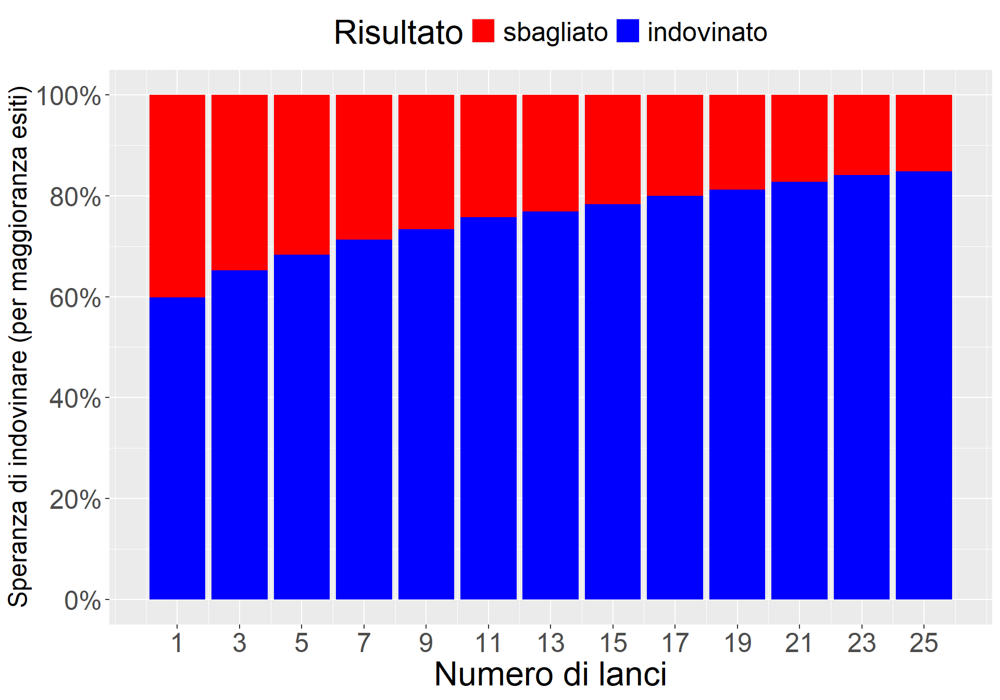
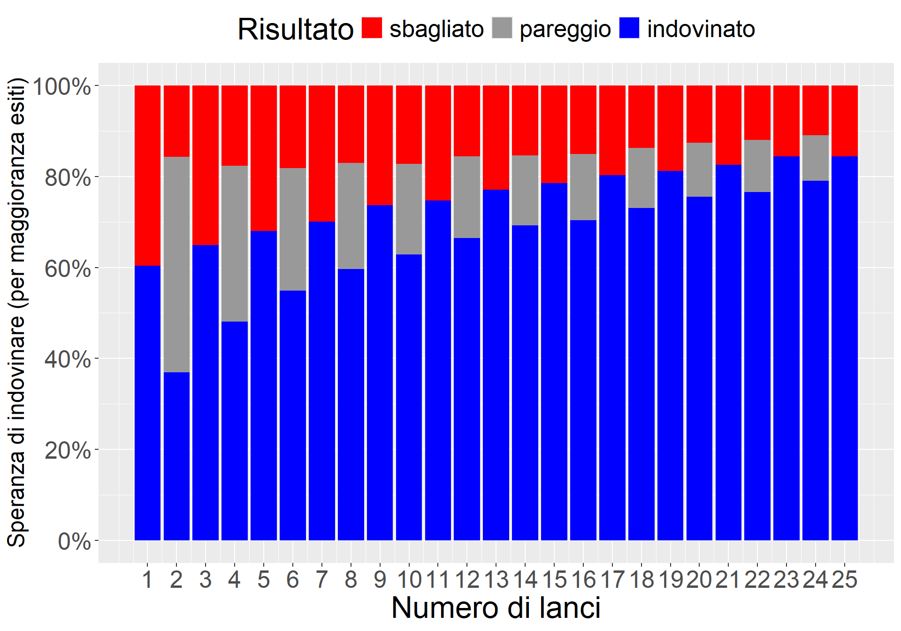

‘Decidere o non decidere?’: L’Analisi di Potenza nella Ricerca Psicologica
Author
toffa x psicostat @ science4all
Published
September 24, 2024
Fare ricerca in Psicologia e nelle Scienze Sociali è difficile perché i fenomeni sono molto variabili, dipendono da tanti fattori, cambiano da persona a persona e da contesto a contesto. In Chimica la miscela di due sostanze in un certo ambiente dà sempre lo stesso risultato. In Psicologia, invece, le risposte delle persone sono sempre diverse. Il nostro compito è provare a cogliere, nonostante questo, qualche regolarità.
Quando un fenomeno è molto variabile, raccogliere abbastanza osservazioni per concludere qualcosa con ragionevole sicurezza è fondamentale. Considerate anche che in Psicologia osserviamo il comportamento delle persone, non di miscele chimiche. Di rado le persone sono disposte a farsi “osservare” per lunghi periodi, o a rispondere a un gran numero di domande che vorremmo porre loro (senza contare che “sotto osservazione” il loro comportamento potrebbe non essere del tutto spontaneo). Diventa dunque fondamentale economizzare le risorse: ma quante ne servono?
Le sfide che vi abbiamo posto (vedi qui) facevano ragionare proprio su questo. Bisognava arrivare a delle conclusioni nonostante l’incertezza, avendo risorse limitate e osservando fenomeni variabili. Se vi è sembrato di giocare d’azzardo, be’, a volte abbiamo questa impressione anche noi. Ma l’importante è che il rischio sia calcolato. Il calcolo a priori delle risorse (cioè delle osservazioni) necessarie si chiama, a seconda dei casi, design o power analysis.
Per esemplificare, pensiamo al gioco della moneta. Dovevamo decidere se la moneta fosse sbilanciata verso “testa” o verso “croce”. L’esempio è un po’ inverosimile perché le monete truccate, nonostante il mito, in realtà non esistono… ma ci serviva come caso illustrativo. Un’altra semplificazione un po’ inverosimile, ma utile per il gioco, era che la moneta fosse certamente sbilanciata verso “testa” oppure verso “croce”, e mai equa. Questo limitava le scelte possibili, semplificando così la spiegazione che daremo.
Ovviamente, se una moneta fosse così tanto sbilanciata da dare sempre “testa” o sempre “croce”, ce ne accorgeremmo quasi subito. L’incertezza, invece, rimane perché otteniamo un mix di risultati. Ma così è anche il comportamento delle persone: non è deterministico ma probabilistico, rendendo più difficile cogliere le regolarità. Tecnicamente, la “forza” di una certa regolarità si chiama dimensione dell’effetto (o effect size). Più forte è questa regolarità, più facilmente arriveremo a coglierla. Gli effetti in Psicologia hanno quasi sempre una dimensione piccola, purtroppo… o per fortuna! (pensate a un mondo in cui il nostro comportamento fosse rigidamente e fortemente determinato da pochi fattori ben precisi! non sarebbe un bel mondo…)
Per sapere quante osservazioni ci serviranno per trarre una conclusione abbastanza sicura dobbiamo ipotizzare una certa dimensione dell’effetto. Questa ipotesi, ovviamente, potrebbe rivelarsi sbagliata, ma ci serve come guida. Noi abbiamo ipotizzato uno sbilanciamento verso “testa” (anziché “croce”) del “60% vs 40%”. Se fosse stato “90% vs 10%” il gioco sarebbe stato più facile… ma anche meno divertente, e poi in Psicologia sappiamo che non è mai davvero così “facile”! Dunque, “60% vs 40%” è un’ipotesi-guida “plausibile” per qualcosa che ci aspettiamo essere molto variabile. A questo punto, il calcolo di quante osservazioni siano necessarie può essere fatto con delle formule. In casi più complessi si può simulare il fenomeno: un po’ per esemplificare, un po’ perché ci diverte, ora abbiamo simulato (anche se avremmo potuto usare le formule).
Guardate la seguente figura e poi leggete la spiegazione sotto:
La figura riassume cosa succede se si ripete il “gioco della moneta” migliaia di volte, con numeri di lanci da 1 a 25. Naturalmente non abbiamo passato delle giornate a giocarci: abbiamo lasciato che lo facesse il computer: simulando, appunto, e risolvendo il tutto in pochi secondi ;-)
La linea verde rappresenta la “verità” (ground truth) ipotetica: nell’ipotesi, la moneta è sbilanciata al 60% su “testa”. La linea tratteggiata sul 40% rappresenta l’ipotesi contraria, cioè che la moneta fosse invece sbilanciata verso “croce”. I puntini neri rappresentano i vari risultati ottenuti dopo ciascuna ripetizione del gioco: con un solo lancio otterremo “testa” al 100% oppure allo 0%, ma ovviamente non possiamo concludere nulla; con 15 lanci, otterremo “testa” molto probabilmente il 40-80% delle volte; con 25 lanci otterremo “testa” molto probabilmente il 50-70% delle volte, dandoci già una ragionevole garanzia che la moneta sia davvero sbilanciata verso “testa” e non verso “croce”. Le bande verdine attorno alla linea verde scuro si chiamano “bande di confidenza”, e rappresentano la quantità di incertezza che rimane attorno a un certo risultato dopo aver fatto un certo numero di lanci (qui abbiamo rappresentato quelle all’80% e al 95%): più lanci facciamo, minore diventa l’incertezza, ma anche più risorse abbiamo consumato.
Cosa ci insegna la figura sopra? In breve: che se facciamo un’ipotesi non abbiamo ancora osservato niente di reale… ma possiamo già farci un’idea di quanta incertezza avremo dopo aver raccolto un dato numero di osservazioni… e magari decidere che il gioco non vale la candela, che la ricerca non la condurremo affatto, perché ci costerebbe troppe risorse per lasciarci comunque troppo incerti.
Ora guardate la figura sotto:
Code
estimates2 =reshape(estimates,direction="long",varying=c("success","uncertain","fail"),times=c("indovinato","pareggio","sbagliato"),v.names="outcome",timevar="Risultato")estimates2$Risultato =factor(estimates2$Risultato,levels=c("sbagliato","indovinato"))estimates2 = estimates2[!is.na(estimates2$Risultato),]ggplot(data=estimates2)+geom_bar(aes(x=n,y=outcome,fill=Risultato),stat="identity")+scale_y_continuous(breaks=seq(0,1,.2),labels=percent)+scale_fill_manual(values=c("red","blue"))+scale_x_continuous(breaks=lanci)+theme(text=element_text(size=24), legend.position="top")+theme(axis.title.y=element_text(size=18))+ylab("Speranza di indovinare (per maggioranza esiti)")+xlab("Numero di lanci")

La figura mostra la “speranza” di vincere al gioco della moneta affidandosi alla maggioranza dei risultati dei lanci. Nel gioco, come nella vita quotidiana, e spesso anche nella ricerca, alla fine dobbiamo prendere decisioni. Nel gioco della moneta come si decideva? A un certo punto si guardava se fossero uscite più “teste” o più “croci”, e ci si affidava a quello.
La figura sopra mostra quale sia la “speranza” di indovinare la verità dopo un certo numero di lanci. Stando alla nostra ipotesi, dopo un singolo lancio la “speranza” di indovinare sarebbe solo del 60% (cioè: se esce “testa” dico “testa”, altrimenti dico “croce”). Ma dopo 25 lanci questa “speranza” a quanto è salita? A circa l’85%. Bene! Ma come vedete, non è ancora una certezza.
Prima di andarvene, guardate ancora quest’ultima figura (e la spiegazione sotto):
Code
niter =1e4prob =0.60lanci =seq(1,25,1)estimates =data.frame(n=lanci,mean=NA,lower1=NA,upper1=NA,lower2=NA,upper2=NA,success=NA)for(i in1:nrow(estimates)){ out =rep(NA,niter)for(j in1:niter){ x =rbinom(estimates$n[i],1,prob) out[j] =mean(x) } estimates$success[i] =mean(out>0.50) estimates$uncertain[i] =mean(out==0.50) estimates$fail[i] =mean(out<0.50)}estimates2 =reshape(estimates,direction="long",varying=c("success","uncertain","fail"),times=c("indovinato","pareggio","sbagliato"),v.names="outcome",timevar="Risultato")estimates2$Risultato =factor(estimates2$Risultato,levels=c("sbagliato","pareggio","indovinato"))ggplot(data=estimates2)+geom_bar(aes(x=n,y=outcome,fill=Risultato),stat="identity")+scale_y_continuous(breaks=seq(0,1,.2),labels=percent)+scale_fill_manual(values=c("red","#999999","blue"))+scale_x_continuous(breaks=lanci)+theme(text=element_text(size=24), legend.position="top")+theme(axis.title.y=element_text(size=18))+ylab("Speranza di indovinare (per maggioranza esiti)")+xlab("Numero di lanci")

Cos’è cambiato in questa figura? Rispetto a prima, abbiamo aggiunto anche i numeri di lanci “pari”. Coi lanci “pari” potrebbe avvenire un “pareggio” tra “teste” e “croci”, lasciandoci così completamente incerti e senza elementi per sbilanciarci in una decisione. È un problema? Sì e no. Senza entrare in discussioni troppo complesse, e con grossolana approssimazione, questo voleva esemplificare il fatto che, a volte, in ricerca ci troviamo in condizioni di tale incertezza da non poter proprio decidere niente, ma anche questa incertezza può essere, per così dire, prevista fin dall’inizio…
Tenete conto che in tutto questo racconto nessuna moneta è stata effettivamente lanciata, ma abbiamo comunque imparato alcune cose :-)